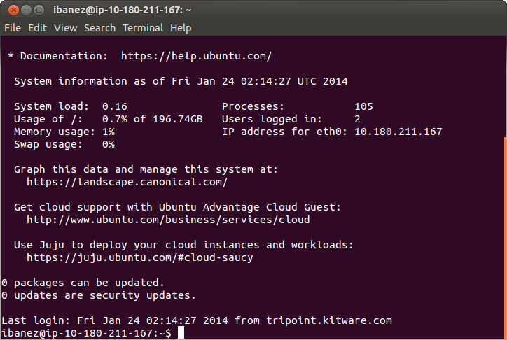
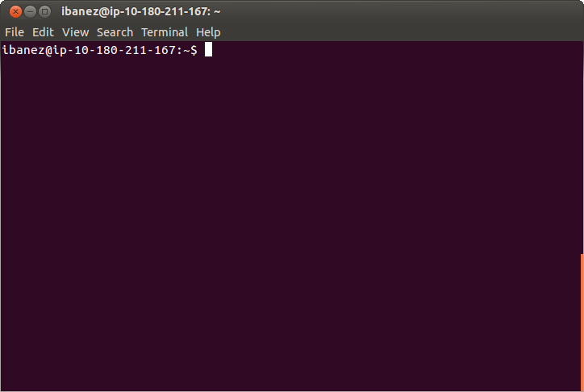
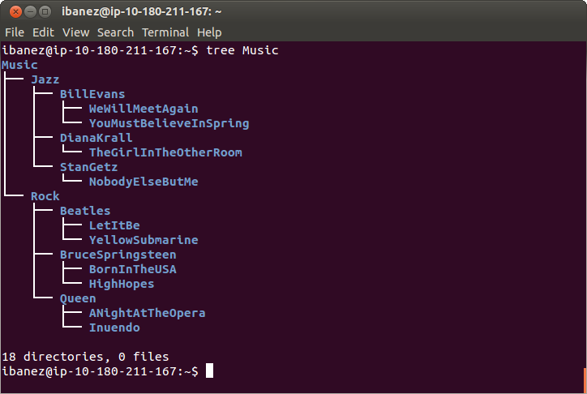
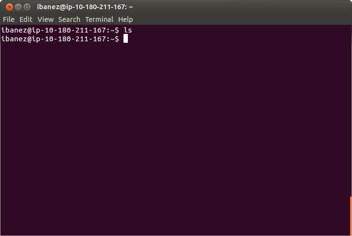
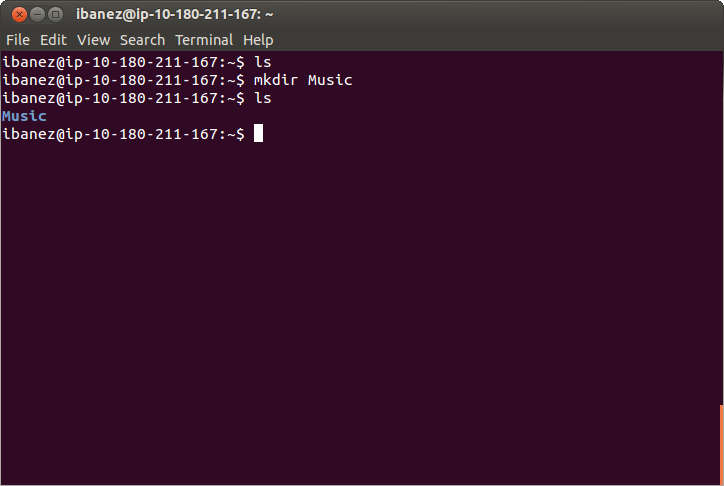
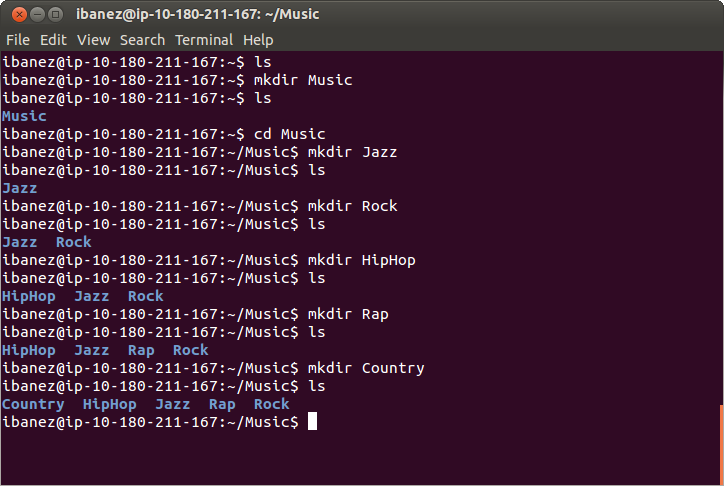
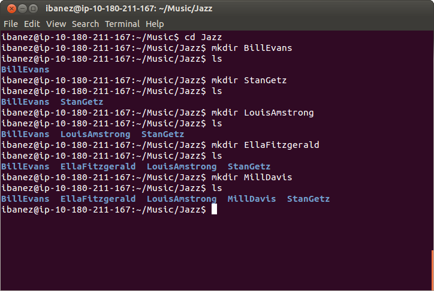
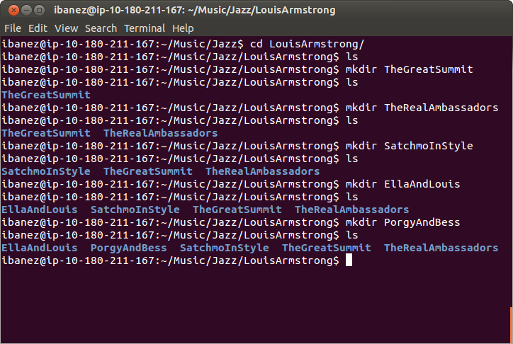
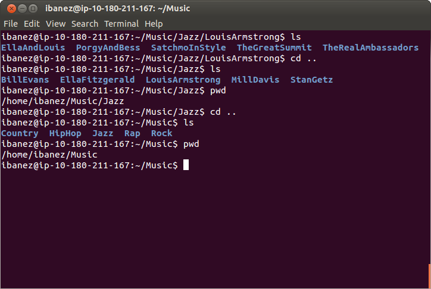

Command
Line
Created by Luis Ibanez
by Luis Ibanez
is licensed under a

Creative Commons by Attribution 4.0 License

Apache 2.0 License
Command
Line
Communicating
with a
Computer
You just logged in the server:
Welcome to the Real World !
Type:
clear
to clear the screen.
Now, you see this:
Type:
whoami
to see your username.
Type
date
to see the day and time.
Type
who
to see what other users are logged in,
and from where they are connected.
Type
clear
to clear the screen.
Think:Tree !

Think:Tree !

Files
are organized
in directories
Directories
are organized into
more directories
Directories
form
a tree
Like this one
Type
ls
to get a list of files and directories.
It will be empty in your initial account.
Type
mkdir Music
to create a new directory called "Music"
Then use "ls" to see the directory.
Enter the Music directory with the command
cd Music
Then use "mkdir" to create more Directories
and use "ls" to see those directories.
mkdir Jazz
ls
mkdir Rock
ls
mkdir HipHop
ls
mkdir Rap
ls
mkdir Country
ls
Like this:
Enter the Jazz directory with the command
cd Jazz
Then use "mkdir" to create more Directories
and use "ls" to see those directories.
mkdir BillEvans
ls
mkdir StanGetz
ls
mkdir LouisArmstrong
ls
mkdir EllaFitzgerald
ls
mkdir MillDavis
ls
Like this:
Enter the LouisArmstrong directory with the command
cd LouisArmstrong
Then use "mkdir" to create more Directories
and use "ls" to see those directories.
mkdir TheGreatSummit
ls
mkdir TheRealAmbassadors
ls
mkdir SatchmoInStyle
ls
mkdir EllaAndLouis
ls
mkdir PorgyAndBess
ls
Like this:
Go back to the parent directory with the command
cd ..
Then use "ls" to see the directories.
ls
Then use "pwd" to see where you are.
pwd
"pwd" stands for "Print Working Directory".
Then
Do it
Again
Go back to the parent directory with the command
cd ..
Then use "ls" to see the directories.
ls
Then use "pwd" to see where you are.
pwd
"pwd" stands for "Print Working Directory".
Like this:
Your
Turn !
Go to the
"Music"
Directory
Create a Directory
for your favorite
Genre
Enter that Directory
And Create Directories
for your three favorite artists
Enter the Directory of your favorite artist
And Create Directories
for your three favorite albums
Breath!
Smile!
Time to
Travel
Think of a Country and City
that you would like to visit
if someone else is paying for the trip.
Go to the shared directory
cd /INF202World
See the available directories
ls
Enter the Directory
of your destination continent
See what Directories
already exist for countries
Create a Directories
for your destination country
Give permissions
For others to enter this country
chmod 777 countryname
Where "countryname" should be replaced with the actual name of your destination country"
Enter the Directory
of your destination country
See what Directories
already exist for cities
Create a Directories
for your destination city
Give permissions
For others to enter this city
chmod 777 cityname
Where "cityname" should be replaced with the actual name of your destination city."
Enter the Directory
of your destination city
Leave your mark !
with the command
echo "John Doe" >> visitors.txt
but of course, use your own name
Check the result
with the command
cat visitors.txt
You should see your own name.
Give permissions
For others to leave their mark too
chmod 777 visitors.txt